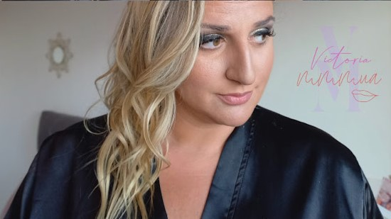
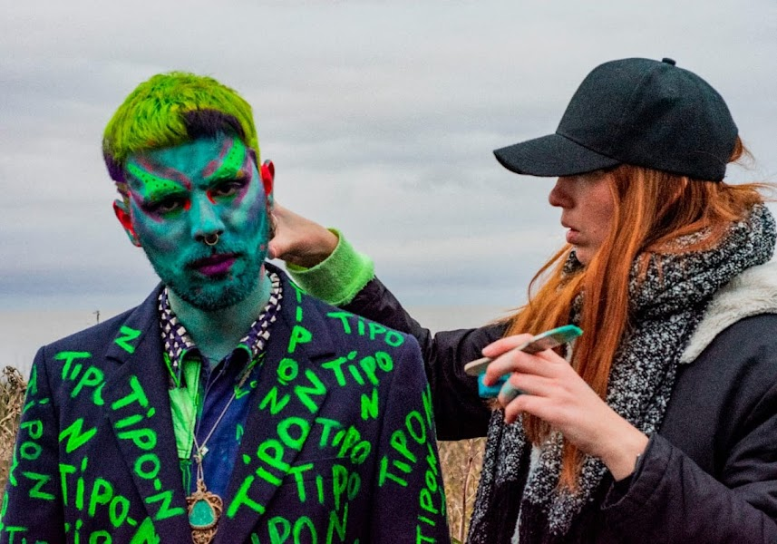

Maquillaje y peinado social a domicilio
¿Buscas la comodidad de recibir el servicio de maquillaje en tu hogar u otro lugar de tu elección?
- Ya sea para una boda, una fiesta, una sesión de fotos o cualquier otro evento, trabajaremos junt@s para crear el look perfecto que refleje tu estilo y personalidad.
- Servicios de maquillaje complejo, express y maquillaje y peinado
- Utilizo productos de alta calidad y técnicas especializadas para asegurar un acabado impecable y duradero.
- Los precios varían de acuerdo a tus necesidades y la cantidad de personas
Maquillaje en fiestas y eventos

¡Haz que tu evento sea inolvidable! Amplia variedad de opciones para temáticas específicas.
- Glitter Bar:
Agrega brillo y glamour a tu evento, trayendo una amplia gama de colores y texturas de brillos para crear diseños deslumbrantes en rostros, cabello y cuerpo. Haz que tus invitados brillen y destaquen en la ocasión especial. - Stand de Maquillaje Temático:
Haz que tus invitados se sumerjan en un mundo de fantasía con nuestro Stand de Maquillaje Temático. Ofrecemos una variedad de temáticas divertidas y emocionantes, como princesas, años 80, superhéroes y más. - Clase de Automaquillaje en tu Fiesta:
Aprende los pasos básicos del maquillaje mientras disfrutas de tu fiesta. Ya sea una despedida de soltera, una reunión de amigas o cualquier otro evento, esta divertida actividad añadirá un toque especial y educativo a tu celebración.
Maquillaje artístico

Mi servicio de maquillaje profesional ofrece una experiencia completa para teatro y producciones audiovisuales.
- Me especializo en crear looks artísticos y peinados que realzan la interpretación de los personajes y complementan la visión creativa de la obra. Ya sea que necesites maquillajes impactantes, transformaciones sorprendentes o estilos de época, te garantizo un servicio excepcional y personalizado.
- Me comprometo a brindar un servicio integral a mis clientes. Además de proporcionar maquillaje y peinado profesional, ofrezco asesoramiento en productos y técnicas para el cuidado y mantenimiento de la piel y el cabello. También brindo acompañamiento en la construcción de personajes, asistiendo en la creación de maquillajes que reflejen la personalidad y características únicas de cada personaje. Me aseguro de que tu camarín esté equipado con los productos y herramientas necesarios para facilitar el proceso de transformación.
- Estoy comprometida en brindar resultados excepcionales y satisfacer tus necesidades creativas. Contáctame para discutir cómo puedo colaborar en tu proyecto.
 Consultas y presupuesto
Consultas y presupuesto
Clases de automaquillaje

¿Te gustaría aprender a maquillarte como una profesional?
- Clases de automaquillaje totalmente personalizadas, con técnicas y consejos profesionales para que puedas lograr un maquillaje impecable por ti misma.
- Asesoramiento y Acompañamiento:
Desde el uso adecuado de productos hasta la aplicación de sombras y delineadores, te brindaremos los conocimientos necesarios para resaltar tus rasgos y realzar tu belleza única. - Clases divertidas y adaptadas a tus necesidades y nivel de habilidad.